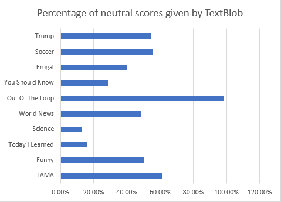

This project was one of the more enjoyable projects to work on. I attribute this mostly to the fact that we were given a choice of nearly anything we could do our project on as this was a general Senior Research class.
On this project, I worked with another classmate on creating a program that would scrape the top 10 posts from the top 5 and bottom 5 subreddits of the top 100 subreddits from here
At the time of doing the project, those subreddits were as follows:
- IAMA
- TodayILearned
- Funny
- Science
- WorldNews
- OutOfTheLoop
- Frugal
- YouShouldKnow
- Soccer
- Trump
- WTF
One thing to note is that we left out some subreddits that we knew were going to be neutral and/or were not imporant to know the sentiment of. This includes subreddits such as Announcements and some NSFW ones.
The code is very repetitive so I'll include this snippet and explain how the program works

I've left out the Vader Sentiment Analysis code as we've ignored these values for the final results as we (and some other classmates) found that the tool gives far more neutral results than Textblob.
In essence, the first line gets submissions in the subreddit of our choosing (in this case, r/iama) and is limited to only the top 10 posts in the hot tab.
Next, the title is printed (just for our own sake - this doesn't go into the output file), a variable named statement is passed this title, and the sentiment is calculated using TextBlob and the value is assigned to the sentiment variable
It's important to note that TextBlob essentially returns a numbers between -1 and 1. The closer the number is to 1, the higher the positivity value and vice versa with 0 being completely neutral. Further information on TextBlob can be found here
Since we were analyzing 10 posts, we felt it would be appropriate to just combine the scores to get an all around average sentiment for that time of the day. That's what you can see with the iamaTally. It's just taking the previous score (they're all set to 0 initially) and adding the new score.
Everything after this is fairly straightforward. It writes a new line, the name of the subreddit, and the sentiment score.
Here you can see our simplified accompanying results (more in depth results can be found in our paper and full excel file should you wish to view them):
|  |
Surprising even to us, r/funny had the lowest and only negative sentiment score while r/Frugal (who would have guessed) had the highest.
After going back and looking individually at the posts and scores they got, it became clear that the problem was that most people on the funny subreddit are fairly sarcastic in their post's titles. Posts like "when the Grim Reaper is on your marketing team" or "One of my favorite scenes from Arrested Development" are given negative scores as they use negative words even though the post itself is comedic.
In addition to this, we found that a lot of the posts submitted to r/funny in particular were very short and therefore were given neutral scores. For example, posts such as "Let it snow?" or "wait for it .." are given neutral scores even though the picture associated with it is mostly comedic, lighthearted content.
All in all, it was a fun project that taught me a lot about Python and how it works. Before this project, I only had a small amount of experience from a past net-centric computing course. In fact, at the moment Python is my favorite language and I plan on learning much more about it.
If you wish to download the files associated with the project, please use the following links: SentimentAnalysis.py, Research_Paper_Sentiment_Analysis.docx, RESULTS.xlsx